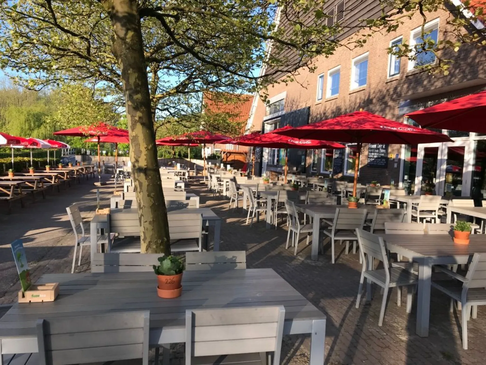
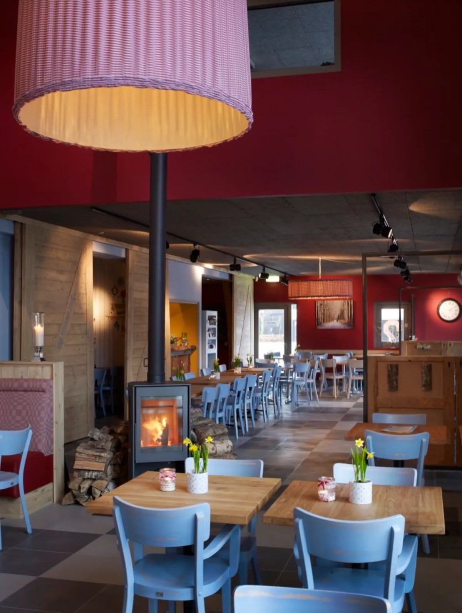
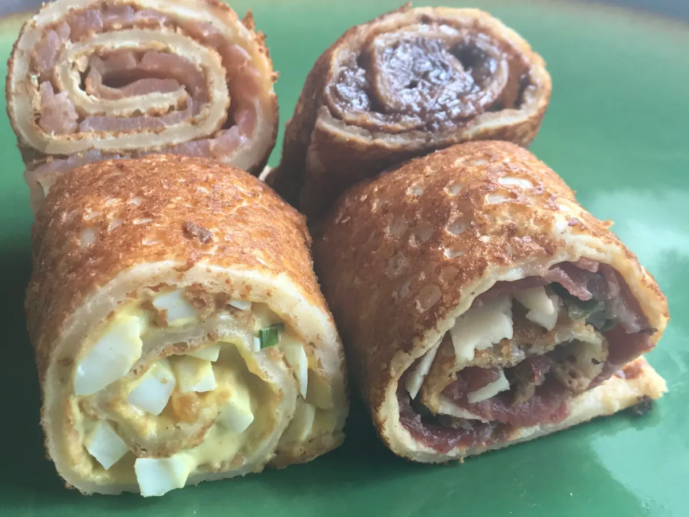
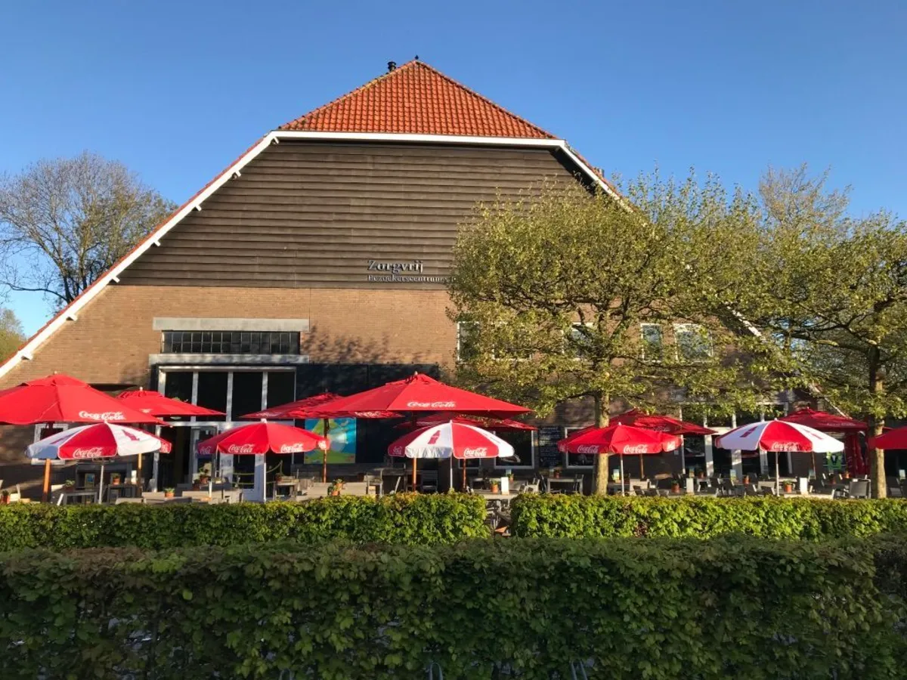
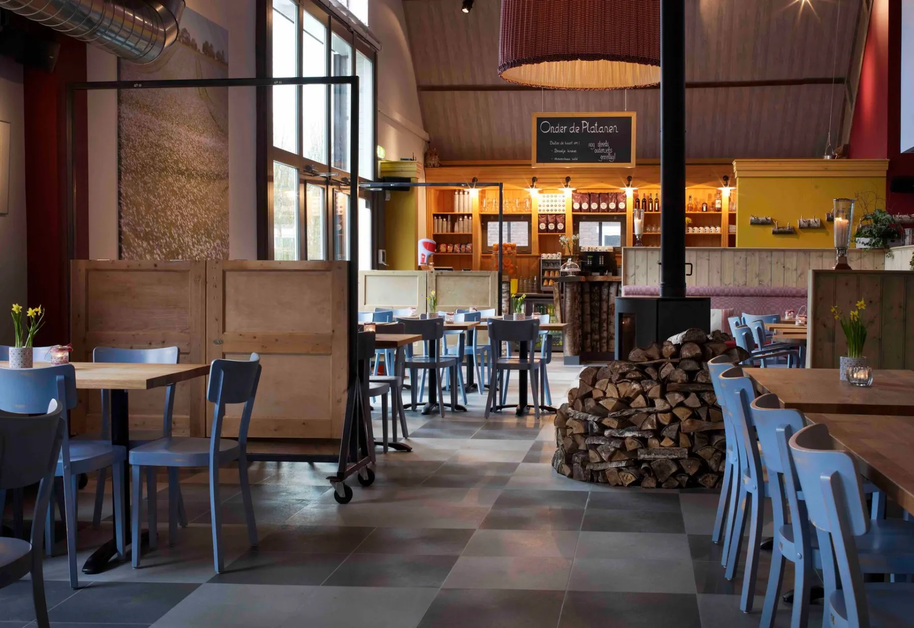
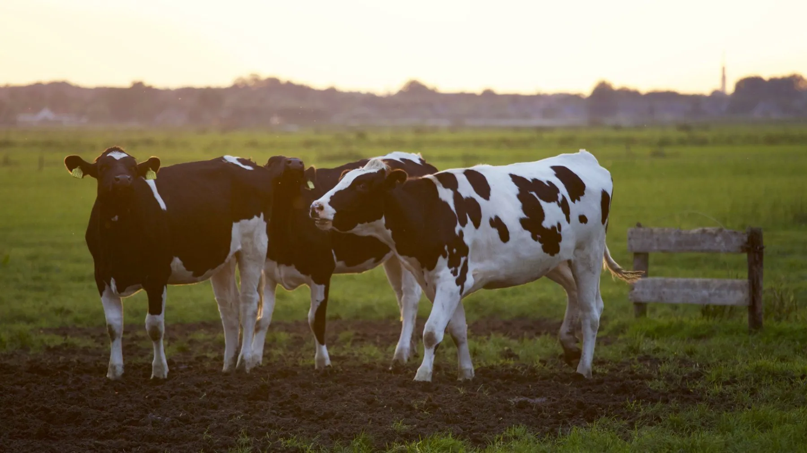
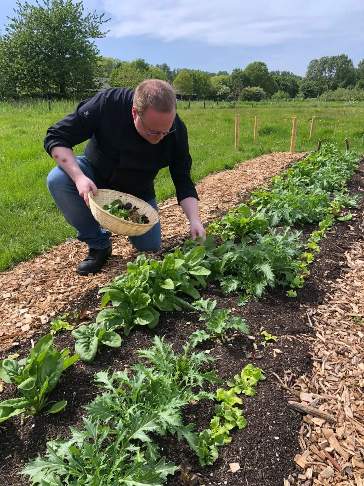
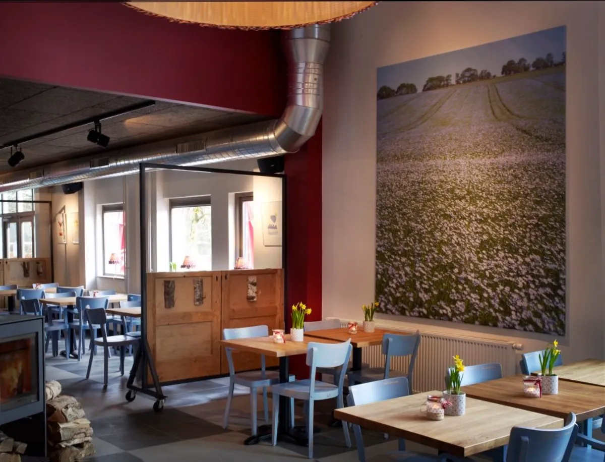
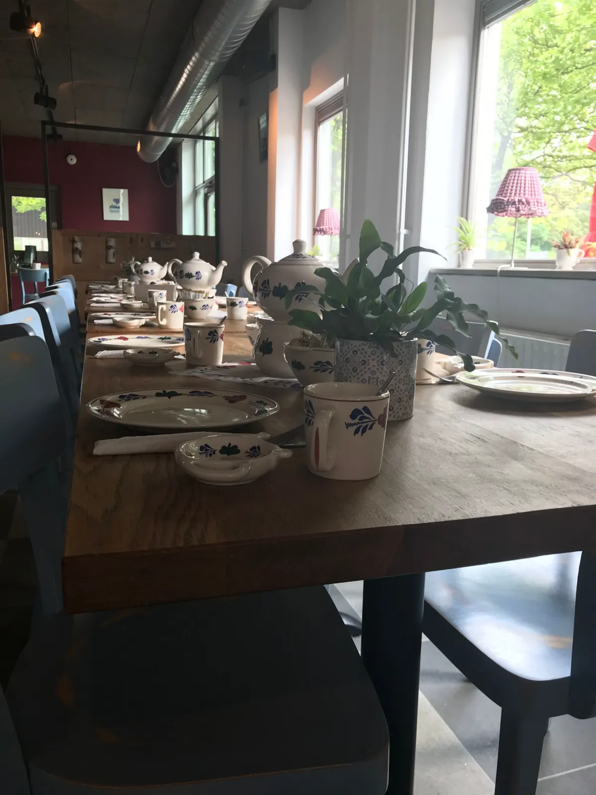
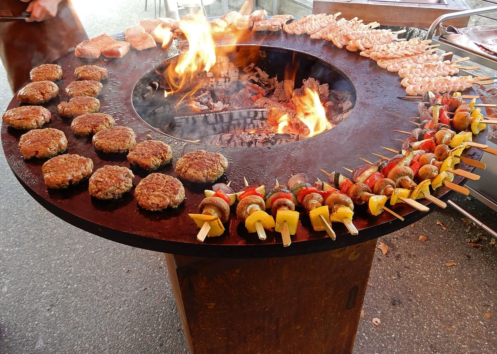

- Woensdag t/m zondag
- 09.30 - 17.00
De keuken sluit een half uur eerder.

Voor ontbijt, koffie met wat lekkers, lunch, pannenkoeken, gezellig borrelen op ons terras en het lekkerste softijs van de omgeving.
Onder de Platanen ligt op het Boerenerf in recreatiegebied Spaarnwoude, naast Boerderij Zorgvrij en Tuinderij Het Groene Leven. Binnen brandt de houtkachel, buiten staan de tafels onder de platanen.
De producten die wij gebruiken zijn zoveel mogelijk dagvers en onze gerechten worden bereid waar u bijstaat. Wij werken zo vaak als het kan lokaal:



Wij zijn open voor ontbijt, koffie, lunch en een borrel op het terras. Reserveren kan via info@onderdeplatanen.nl of bel 023 - 539 60 59.
De keuken sluit een half uur eerder.
De keuken sluit een half uur eerder.
De keuken sluit een half uur eerder.

Als 15-jarig jongetje wilde Vilmar leraar worden en Stephan wilde gewoon lekker werken. Naarmate wij ouder werden en bij pannenkoekenboerderij Onder de Platanen gingen werken, raakten we "verliefd" op OdP. De dag dat Vilmar begon bij OdP stelde hij zijn dromen bij, want de horeca had zijn hart gestolen. Na wat omzwervingen en opgedane ervaringen in de horeca wist Vilmar het in oktober 2015 echt zeker: OdP moest op termijn van Stephan en hem worden!
De manier waarop Ruud en Josje van der Putten "hun" OdP hebben opgebouwd, maakt het een plek waar iedereen zich thuis voelt, en dat willen wij ook. Wij willen graag doorzetten waar Ruud en Josje mee zijn begonnen. Als broers bouwen aan zoiets moois is iets waar wij al jaren van hebben gedroomd. Onze filosofie blijft: een plek bieden waar iedereen zich thuis moet voelen, jong en oud!
Vilmar en Stephan Kort
Ons personeel is erop getraind het u naar de zin te maken: uw bezoek moet een uitje zijn. Wij vragen u wel om er als begeleider van de kinderen voor te zorgen dat zij zich gedragen. Is er toch iets niet naar wens, zeg het dan gerust tegen een van onze medewerkers. En is het erg druk, dan vragen wij om uw begrip: wij doen ons uiterste best om iedereen zo snel mogelijk te helpen.
Aan adverteren doen wij niet, wel sponsoren wij kleine en grote verenigingen, ouderen, zieken en jongeren. Wij zijn een landelijk erkend opleidingsbedrijf voor horecastudenten, met erkende leermeesters voor bediening, keuken, management en recreatie. Heeft u het naar uw zin gehad? Een recensie op Facebook of Google stellen wij bijzonder op prijs.
Samen met Boerderij Zorgvrij en Tuinderij Het Groene Leven vormen wij het Boerenerf Spaarnwoude, met de historische boerderij als kloppend hart. Hier ervaar je waar ons voedsel vandaan komt. Kinderen kunnen lekker rondrennen en spelen bij de dieren of in de speeltuin, en tussendoor maak je een praatje met de boer of tuinder.

Kraakverse melk: voor € 1 proef je vroeger met een liter vers getapte biologische melk. De fles kun je apart kopen, maar je mag hem ook van huis meenemen. Je kunt er ook kaas maken, koeien aaien en een bezoek brengen aan de streekwinkel.


Op de galerij wordt vrijwel altijd kunst geëxposeerd: lokale kunstenaars krijgen hier een podium. Kom je als gezin, kinderfeestje, schoolklas of bedrijf? Zorgvrij heeft schoolprogramma's, kinderfeestjes en evenementen. Ook het informatiecentrum van recreatiegebied Spaarnwoude vind je hier.
Boerderij Zorgvrij is onderdeel van Boerenerf Spaarnwoude. Voor de educatieve afdeling: zorgvrij@spaarnwoude.nl · spaarnwoude.nl
Behalve van de gerechten op de kaart kunt u bij ons ook genieten van uw verjaardag, bruiloft of bedrijfsfeest. Wij maken alles precies op maat, voor kleine en grote groepen. Wilt u gewoon gezellig langskomen met familie of vrienden? Bel of mail ons, dan zetten wij de reservering voor u klaar.

Verjaardag, bruiloft of bedrijfsfeest: wij hebben vergunning tot in de nacht. Elk feest wordt geheel voor u op maat gemaakt. Vraag de bediening naar de mogelijkheden, of laat hieronder uw idee achter: wij maken vrijblijvend tijd voor een persoonlijk gesprek.

Samen met ons team organiseert u een onvergetelijke dag bij Onder de Platanen en op de boerderij. Al veel bedrijven, groot en klein, gingen u voor.
Vragen? Mail of bel 023 - 539 60 59 en vraag naar Vilmar of Stephan.
Laat het ons weten. Wij luisteren naar uw wensen en proberen die te vervullen. Alles is wel onder voorbehoud van beschikbaarheid en mogelijkheden.
Wij zijn doorlopend op zoek naar leuke en gezellige horeca(vak)krachten, en als erkend leerbedrijf leiden wij graag studenten op.
Voor de bediening of de keuken, of als zelfstandig werkend kok.
Op zoek naar een uitdagende stage? Je krijgt ervaren en enthousiaste leermeesters (aangesloten bij de regionale HorecaVakpunt-groep) en goede, degelijke begeleiding.
In een gezellige en persoonlijke sfeer leer je in de praktijk. Samen kiezen we een tijdpad om je doelen te halen: je observeert, assisteert en voert samen met je stagebegeleider de doelen uit. Zie je het zitten? Kom langs of mail je cv en motivatiebrief.
Mail je cv en motivatieVanuit Haarlem, Amsterdam of Zaandam neemt u de afslag Recreatiegebied Spaarnwoude. Volg in het recreatiegebied de ANWB-bewegwijzering R101 tot het grote parkeerterrein van Boerderij Zorgvrij en Pannenkoekenboerderij Onder de Platanen.